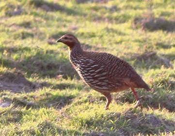

स्वैम्प फ्रैंकोलिनSwamp Francolin
Ortygornis gularis · Phasianidae · BRD-0284

- Scientific name वैज्ञानिक नाम
- Ortygornis gularis (Temminck, 1815)
- Family कुल
- Phasianidae
- Hindi हिंदी
- स्वैम्प फ्रैंकोलिन
- Local names स्थानीय नाम
- swamp francolin, swamp partridge, swaimp frankolin, bhil titar
- Status here यहाँ की स्थिति
- native
- Movement आवागमन
- Resident, here all year
- Known from कहाँ दर्ज
- Others have published records from the Basti–Ayodhya districts बस्ती–अयोध्या के ज़िलों से दूसरों के प्रकाशित अभिलेख
- IUCN IUCN
- VU
- Review समीक्षा
- not yet reviewed
When to look कब देखें
Present all year. साल भर मौजूद।
Tell it apart from इनसे अलग पहचानें
स्वैम्प फ्रैंकोलिन / Swamp Francolin
Ortygornis gularis (Temminck, 1815) — Phasianidae
स्वैम्प फ्रैंकोलिन — तराई और गंगा-घाघरा के नम कछारों, दलदलों और ऊंचे सरकंडों में रहने वाला एक दुर्लभ और संकोची तीतर, जिसके गले पर चटख लाल-कत्थई धब्बा और छाती पर सफेद-काली धारियां होती हैं और जो पानी में खड़े नरकटों के बीच छिपकर रहता है।
Quick Identification त्वरित पहचान
| Feature | Description |
|---|---|
| Throat patch | Distinctive bright rusty-chestnut patch on chin and throat |
| Breast pattern | Boldly striped underparts with white feather centres edged by black and brown |
| Upperparts | Brown finely barred and vermiculated with buffy-white, with white feather shafts |
| Tail pattern | Deep chestnut outer tail feathers contrasting with brown central rectrices |
| Habits | Skulking ground bird of waterlogged marshes; flies reluctantly with rapid whirring |
Heavily built, long-legged marshland partridge recognized by its rich rusty-chestnut throat patch, boldly streaked black-and-white underparts, and rich rufous-chestnut outer tail. It frequents waterlogged elephant grass and tall reeds, running swiftly through shallow marsh water rather than taking wing.
हिंदी: ऊंचे सरकंडों और दलदलों में रहने वाला भारी तीतर जिसके गले पर लाल-कत्थई धब्बा होता है। छाती पर सफेद और काली धारियां होती हैं। यह उड़ने के बजाय पानी और कीचड़ में तेजी से दौड़कर छिपता है।
Morphology आकारिकी
| Measurement | Value | Source |
|---|---|---|
| Length | About 370–390 mm | Baker (1928) as Francolinus gularis |
| Wing | 162–186 mm | Baker (1928) as Francolinus gularis |
| Tail | 101–127 mm | Baker (1928) as Francolinus gularis |
| Tarsus | About 60–70 mm | Baker (1928) as Francolinus gularis |
| Culmen | About 21–23 mm | Baker (1928) as Francolinus gularis |
The crown and nape are dull brown; a buffy-white supercilium widens into a patch behind the eye, bordered below by a dark streak. The upper plumage is brown, barred with buffy-white and conspicuously marked with white feather shafts. The chin, throat, and fore-neck are rich rusty-chestnut. The lower plumage is white to pale buff, each feather handsomely bordered with black and brown. The outer tail feathers are deep chestnut with buff tips. The bill is dark brown with a paler base to the lower mandible; the iris is hazel-brown. The legs and feet are dull red or reddish-brown, with males carrying a stout, blunt tarsal spur.
Vocalisations. A remarkably loud, ringing, metallic call uttered in series, rendered by naturalists as koi-koer-koi or khy-aah, echoing across marshlands at dawn and dusk.
हिंदी: इसका शरीर भारी और पैर मजबूत होते हैं (Baker 1928 as Francolinus gularis)। नर के पैरों पर मजबूत कांटा (स्पुर) होता है। सुबह-शाम इसकी तेज गूंजती हुई आवाज दलदल में दूर तक सुनाई देती है।
Behaviour & Ecology व्यवहार और पारिस्थितिकी
A highly specialized, secretive inhabitant of wet alluvial grasslands and waterlogged reedswamps. Unlike other Indian partridges that avoid standing water, it thrives in ankle-deep mud and waterlogged soils among dense Typha and Phragmites beds. It feeds along marsh margins in early morning and late afternoon, retreating into impenetrable reed thickets during midday heat. When pressed, it runs rapidly through dense vegetation; only when cornered does it flush with a sudden, noisy explosion of whirring wings, flying low over the reeds before dropping back into cover.
हिंदी: यह पानी और कीचड़ वाले सरकंडों में रहने का आदी है। यह खतरे की आहट पाते ही नरकटों के बीच तेजी से भागता है और केवल बहुत मजबूरी में भारी आवाज के साथ फड़फड़ाते हुए थोड़ी दूर उड़कर फिर झाड़ियों में गिर जाता है।
Life Cycle जीवन चक्र
The breeding season extends from March to May across northern India and the Terai tract. Courting males proclaim territory by perching atop elevated grass tussocks, calling continuously. The nest is a well-concealed pad of woven reeds, grass blades, and dry leaves, constructed among broken-down reed stalks or elephant grass tussocks directly over shallow marsh water or damp ground. The female lays a clutch of pale buff or creamy-white eggs and incubates them diligently. Precocial downy chicks hatch after several weeks and follow their parents into the reeds.
हिंदी: प्रजनन बसंत और गर्मियों में मार्च से मई के दौरान होता है। यह दलदल के बीच खड़े सरकंडों और सूखी पत्तियों को जोड़कर पानी के ऊपर घोंसला बनाता है। अंडों से निकलते ही बच्चे माता-पिता के पीछे चलने लगते हैं।
Host Plants or Prey आहार
Omnivorous marsh forager with an adaptable wetland diet. It consumes tender succulent shoots, tuberous roots, and seeds of aquatic grasses and sedges (Scirpus, Carex, Typha), alongside fallen grain from flooded paddy edges. Animal food constitutes a substantial portion of its sustenance, including marsh insects, beetles, mole crickets, grasshoppers, ants, and small freshwater gastropod snails probed from the soft mud.
हिंदी: इसका भोजन दलदली पौधों की जड़ें, कोमल कोपलें, बीज और धान के दाने हैं। साथ ही यह कीचड़ में मिलने वाले कीड़े, टिड्डे, झींगुर और छोटे घोंघे भी खाता है।
Predators / Natural Enemies शत्रु
Frequently targeted by wetland predators due to its dense, localized populations. Avian predators include wintering marsh harriers, imperial eagles, and large fish-eagles. Terrestrial carnivores such as the jungle cat, fishing cat, and golden jackal stalk it through tall reeds. Checkered keelback water snakes prey upon downy chicks in shallow waters.
हिंदी: दलदल में रहने के कारण जंगली बिल्ली, गीदड़ और दलदली चील इसका शिकार करते हैं। इसके छोटे बच्चों को बड़े पानी के सांप भी खा जाते हैं।
Agricultural / Human Relevance कृषि प्रासंगिकता
Protected under the Wildlife (Protection) Act 1972. Because it depends strictly on wet alluvial grasslands, it serves as a critical indicator species for the survival of the Gangetic floodplain's endangered wetland ecosystems. Conversion of natural swamps to intensive sugarcane and rice cultivation, alongside grass harvesting and dry-season burning, represents a critical threat to remaining populations.
हिंदी: वन्यजीव (संरक्षण) अधिनियम 1972 के तहत संरक्षित। दलदलों को सुखाकर खेती करने और सरकंडों में आग लगाने से इस दुर्लभ तीतर के प्राकृतिक घर तेजी से नष्ट हो रहे हैं। इसका शिकार करना पूरी तरह प्रतिबंधित है।
Expected Locally स्थानीय रूप से अपेक्षित
Not a field record. Written from published accounts for eastern Uttar Pradesh. No confirmed local sighting yet — if you have seen it, that is what the atlas needs.
अभी तक स्थानीय पुष्टि नहीं। यह विवरण प्रकाशित स्रोतों से है, किसी अवलोकन से नहीं।
GBIF holds published records from these districts. It is expected in the dense, waterlogged nal and elephant grass swamps surrounding Bakhira Lake and the flood basins of the Rapti and Kuwana rivers. A confirmed local record requires an identifiable audio recording of its ringing call or a clear photograph showing the chestnut throat and streaked breast with marsh coordinates.
हिंदी: यह बखीरा झील और राप्ती-कुआना नदी के कछारों में स्थित दलदली सरकंडों में संभावित है। पुष्टि के लिए लाल-कत्थई गले को दर्शाती तस्वीर या इसकी तेज आवाज की रिकॉर्डिंग आवश्यक है।
Distribution वितरण
Global range: Endemic to the northern Indian subcontinent, restricted to the Indus basin (historical), the Gangetic plain of northern India, Nepal Terai, and Brahmaputra valley of Assam and Bangladesh.
In India: Found across the Terai belt of Uttar Pradesh, Bihar, West Bengal, and the Assam valley.
In Uttar Pradesh: Occurs in protected wetland sanctuaries and contiguous tall wet grassland tracts.
In Basti district / eastern UP: Expected in large, undisturbed oxbow marsh complexes with perennial standing water.
हिंदी: यह केवल भारतीय उपमहाद्वीप की गंगा और ब्रह्मपुत्र घाटियों में पाया जाता है। उत्तर प्रदेश में यह तराई और पूर्वी जिलों के बड़े दलदलों में बहुत सीमित स्थानों पर मिलता है।
Research Questions शोध प्रश्न
- How do seasonal flood water levels regulate nest site selection and chick survival in Ortygornis gularis?
- What are the minimum patch size thresholds of tall Typha marsh required to sustain viable breeding populations?
- How does traditional post-winter thatch harvesting and dry-season reed burning affect local habitat availability?
- What is the extent of acoustic divergence in territorial calls between isolated Terai and Brahmaputra populations?
- क्या गर्मियों में सरकंडों के खेतों में लगने वाली आग से स्वैम्प फ्रैंकोलिन के घोंसले और अंडे जलकर नष्ट हो जाते हैं?
- क्या बखीरा पक्षी विहार के आसपास इसके छोटे-छोटे समूह अभी भी सुरक्षित रूप से प्रजनन कर रहे हैं?
Similar Species मिलती-जुलती प्रजातियाँ
| Species | How to tell apart | हिंदी | |
|---|---|---|---|
| Black Francolin \ | Francolinus francolinus | Male is jet black below with round white flank spots and rich chestnut neck collar | काला तीतर नीचे से बिल्कुल काला होता है और उसके बगल में सफेद धब्बे व गले पर कत्थई कॉलर होता है |
| Grey Francolin \ | Francolinus pondicerianus | Drier scrub dweller; pale throat patch ringed with fine black necklace; finely barred underparts | भूरा तीतर सूखे मैदानों में रहता है और उसके गले के चारों ओर बारीक काली मोतियों जैसी माला होती है |
| Barred Buttonquail \ | Turnix suscitator | Much smaller size; lacks hind toe; pale yellow eyes; heavily barred black-and-buff breast | बटन बटेर आकार में काफी छोटी होती है और उसके पैर में पीछे का अंगूठा नहीं होता |
Field rule: Large waterlogged marsh francolin with bright chestnut throat, white-shafted brown back, and boldly streaked black-and-white breast.
हिंदी: दलदल और पानी के सरकंडों में रहने वाला बड़ा तीतर जिसके गले पर लाल-कत्थई धब्बा और छाती पर सफेद-काली धारियां होती हैं।
Taxonomy & Classification वर्गीकरण
Original description. Temminck (1815), Histoire Naturelle Générale des Pigeons et des Gallinacés, vol. 3, p. 401; type locality: India (restricted to Cachar).
Subspecies. Monotypic species; historically placed in Francolinus (Baker 1928 treats it as Francolinus gularis), recent genetic studies place it in the resurrected genus Ortygornis.
Family and order placement. Placed in the family Phasianidae, order Galliformes, class Aves.
Phylogenetic notes. Closely related to the grey francolin (Ortygornis pondicerianus), sharing general vocal structure and tarsal morphology.
IUCN status rationale. Classified as Vulnerable (VU) globally by IUCN (2023) due to rapid population declines driven by agricultural drainage and drainage of floodplain marshes.
हिंदी: इसका पहला वैज्ञानिक विवरण 1815 में टेमिंक ने दिया था। यह फैसिआनिडे कुल का सदस्य है और बर्डलाइफ इंटरनेशनल द्वारा संकटग्रस्त (Vulnerable) श्रेणी में रखा गया है।
Photo Gallery फोटो गैलरी
No photos yet — add field photos to media/species/swamp_francolin/ and run node scripts/sync_photos.js.
Photos needed आवश्यक फोटो
- [ ] Adult standing alert among waterlogged tall reeds showing chestnut throat (पानी के सरकंडों में खड़ा वयस्क तीतर जिसका लाल-कत्थई गला साफ दिखे)
- [ ] Calling male perched on elevated mound or grassy tussock at dawn (सुबह के समय टीले पर चढ़कर तेज आवाज निकालता हुआ नर तीतर)
- [ ] Detail of boldly streaked black-and-white breast and barred flanks (सफेद और काली धारियों वाली छाती का क्लोज-अप दृश्य)
- [ ] Bird running swiftly through ankle-deep marsh water (दलदल के पानी में तेजी से भागते हुए तीतर का एक्शन दृश्य)
- [ ] Well-concealed woven reed nest platform above water level (पानी के ऊपर नरकटों से बना सुरक्षित घोंसला)
- [ ] Natural inundated Typha swamp habitat in the Gangetic floodplain (गंगा-घाघरा कछार के दलदली सरकंडों का प्राकृतिक वास परिदृश्य)
References संदर्भ
- Original description: Temminck, 1815 — see GBIF.
- Baker, E. C. S. (1928). The Fauna of British India, Including Ceylon and Burma: Birds. 2nd ed., Vol. 5. Taylor & Francis, London. (as Francolinus gularis).
- Ali, S. & Ripley, S. D. (1983). Handbook of the Birds of India and Pakistan. Compact ed. Oxford University Press, New Delhi.
- Grimmett, R., Inskipp, C. & Inskipp, T. (2011). Birds of the Indian Subcontinent. 2nd ed. Christopher Helm, London.
- Rasmussen, P. C. & Anderton, J. C. (2012). Birds of South Asia: The Ripley Guide. Vols. 1–2. 2nd ed. Smithsonian Institution and Lynx Edicions.
- IUCN Red List of Threatened Species: Ortygornis gularis, 2023.
- GBIF Occurrence Data — Ortygornis gularis, India (2025).
Source file: species/fauna/birds/swamp_francolin.md